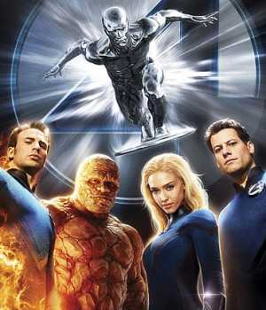

The Fantastic Four is a fictional superhero team appearing in American comic books published by Marvel Comics. The group debuted in The Fantastic Four #1 (cover dated Nov. 1961), which helped to usher in a new level of realism in the medium. The Fantastic Four was the first superhero team created by editor/co-plotter Stan Lee and artist/co-plotter Jack Kirby, who developed a collaborative approach to creating comics with this title that they would use from then on.
The four individuals traditionally associated with the Fantastic Four,
who gained superpowers after exposure to cosmic rays during a
scientific mission to outer space, are Mister Fantastic (Reed
Richards), a
scientific genius and the leader of the group, who can stretch his
body into incredible lengths and shapes; the Invisible Girl (Susan
"Sue" Storm; later "Invisible Woman"), who eventually married Reed,
who can render herself invisible and later project powerful invisible
force fields;
the Human Torch (Johnny Storm), Sue's younger brother, who can
generate flames, surround himself with them and fly; and the monstrous
Thing (Ben Grimm), their grumpy but benevolent friend, a former
college football star and Reed's college roommate as well as a good
pilot,
who possesses tremendous superhuman strength, durability, and
endurance due to the nature of his stone-like flesh.
Since their original 1961 introduction, the Fantastic Four have been
portrayed as a somewhat dysfunctional,
yet loving, family. Breaking convention with other comic book
archetypes of the time, they would squabble and hold grudges both deep
and petty and eschewed anonymity or secret identities in favor of
celebrity status.
The team is also well known for its recurring encounters with
characters such as the villainous monarch Doctor Doom,
Kree Empire's ruthless and tyrant leader Ronan the Accuser, the
planet-devouring Galactus, the sea-dwelling prince Namor, the
spacefaring Silver Surfer and the shape-changing alien Skrulls.
Apocryphal legend has it that in 1961, longtime magazine and comic
book publisher Martin Goodman was playing golf with either Jack
Liebowitz or Irwin Donenfeld of rival company DC Comics, then known as
National Periodical Publications,
and that the top executive bragged about DC's success with the new
superhero team the Justice League of America.[note 1] While film
producer and comics historian Michael Uslan has debunked the
particulars of that story,
[note 2] Goodman, a publishing
trend-follower, aware of the JLA's strong sales, did direct his comics
editor, Stan Lee, to create a comic-book series about a team of
superheroes. According to Lee,
writing in 1974, "Martin mentioned that he had noticed one of the
titles published by National Comics seemed to be selling better than
most. It was a book called The [sic] Justice League of America and it
was composed of a team of superheroes. ... 'If the Justice League is
selling',
spoke he, 'why don't we put out a comic book that features a team of
superheroes?'"[1]:16
